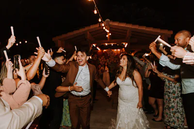

Svadby
Obrad, prípitok aj tanec do rána. Fotky od hostí máte ešte v ten istý večer, nie až o mesiac od fotografa.
Na každej akcii fotí veľa ľudí, ale fotky potom zostanú v ich mobiloch alebo sa stratia v skupinových chatoch. Stačí položiť na stôl QR kód: hostia ho naskenujú a fotky pridajú rovno do spoločnej galérie, bez aplikácie a bez registrácie.
Pre organizátorov aj hostí je to úplne zadarmo.
Na aké akcie
Hodí sa všade, kde je pokope veľa ľudí s mobilmi. Pár príkladov:

Obrad, prípitok aj tanec do rána. Fotky od hostí máte ešte v ten istý večer, nie až o mesiac od fotografa.
Celá trieda, rodičia aj učitelia pridávajú do jednej galérie. Nikto nemusí po akcii nič posielať cez Messenger.
Osemnástka, päťdesiatka či oslava na chate. Odkaz stačí poslať do skupiny a fotky sa zbiehajú samy.
Teambuilding, vianočný večierok či konferencia. Fotky pre kolegov aj na firemný web, bez naháňania ľudí.
Aj babka, ktorá nemá Facebook, pridá fotky jedným ťuknutím. Stačí jej ukázať QR kód.
Párty v klube, dni obce či festival. Každý fotí z iného miesta a po akcii máte všetky zábery pokope.
A tiež promócie, športové turnaje a súťaže, tábory, výlety či stretávky po rokoch.
Ako to funguje
Zvládne to každý, kto vie odfotiť fotku.
Zaregistrujete sa e-mailom a vyplníte názov a dátum. Hneď potom dostanete QR kód a odkaz pre hostí.
Kartička na stôl je pripravená na tlač, stačí ju prehnúť. Odkaz môžete poslať aj do skupiny na WhatsAppe či Messengeri alebo ho dať na plagát.
Naskenujú kód, napíšu svoje meno a vyberú fotky z mobilu. Vy ich vidíte hneď a po akcii si všetko stiahnete naraz.
Ukážkový večer
Fotograf má svoj uhol pohľadu, hostia sú však všade naraz. A ich fotky máte ešte v ten istý večer, nie až o mesiac.
Príchod hostí
14 fotiek
Prípitok
57 fotiek
Torta
103 fotiek
Tanec
161 fotiek
Parket
219 fotiek
Rozlúčka
248 fotiek
Čo dostanete
Každá akcia má všetky funkcie. Nič si nemusíte dokupovať ani zapínať v drahšom balíku.
Nová fotka sa objaví pár sekúnd po nahratí. Pri každej je meno toho, kto ju pridal.
Počet fotiek nie je obmedzený. Videá do 100 MB upravíme tak, aby sa dali prehrať na každom mobile.
Jedným tlačidlom stiahnete celú galériu ako ZIP. Rovnako to vedia aj hostia.
Otvoríte ju na notebooku pripojenom k televízoru alebo projektoru a nové fotky sa premietajú samy.
Želania a odkazy, ktoré zostanú čitateľné aj o desať rokov, na rozdiel od podpisov na obruse. Po akcii si ich môžete vytlačiť.
Keď ich zapnete, hosť naskenuje platobný kód Pay by square, banka mu predvyplní príkaz a sumu si zvolí sám. Peniaze idú priamo na váš účet.
Hotová na tlač vo svetlej alebo tmavej verzii. QR kód si stiahnete aj samostatne, napríklad na plagát.
Galéria sa otvorí len tomu, kto má odkaz, a vyhľadávače ju nenájdu. Odkaz môžete kedykoľvek zmeniť.
NaPamiatku je nová služba a teraz ju skúšam na prvých akciách. Kým zbieram skúsenosti, všetko používate bez poplatkov a bez zadávania platobnej karty. Nie je tu žiadny vodoznak ani obmedzený počet fotiek.
Ak by som niekedy zaviedol platené balíky, oznámim to vopred a akcie založené dovtedy zostanú zadarmo.
Kto za tým je
NaPamiatku som naprogramoval sám ako maturitný projekt, od databázy až po server, na ktorom sú vaše fotky uložené. Chcem, aby fungovalo na skutočných akciách, a preto mi pokojne napíšte, čo vám chýba alebo čo nefungovalo. Na každý e-mail odpisujem osobne.
Háčik nie je žiadny. Nezadávate platobnú kartu a nič vám neskôr nenaúčtujeme. NaPamiatku je nové a teraz mi najviac pomôže vaša spätná väzba. Ak by som niekedy zaviedol platené balíky, oznámim to vopred a akcie, ktoré už máte, zostanú zadarmo.
Nie. Naskenujú QR kód fotoaparátom v mobile, otvorí sa im stránka v prehliadači (funguje na iPhone aj Androide), napíšu svoje meno a môžu nahrávať. Účet si zakladá len organizátor.
Počet fotiek ani videí nie je obmedzený. Jedno video môže mať najviac 100 MB, čo je zhruba minúta z mobilu.
Každú fotku pred nahratím zmenšíme na 2400 bodov na dlhšej strane. Vďaka tomu sa nahrá rýchlo aj cez mobilné dáta a stále je dosť ostrá na vytlačenie vo veľkosti 20 × 30 cm. Videá upravíme do formátu, ktorý sa prehrá na každom zariadení.
Len ten, kto má odkaz alebo QR kód vašej akcie. Galéria nie je verejná a vyhľadávače ju nenájdu. Keby sa odkaz dostal k niekomu, komu nepatrí, v nastaveniach ho jedným klikom zmeníte a starý prestane fungovať.
Organizátor môže ktorúkoľvek fotku kedykoľvek zmazať. Hostia môžu fotku nahlásiť tlačidlom s vlajočkou a nahlásenie príde organizátorovi aj mne.
12 mesiacov od dátumu akcie. Najmenej dva týždne pred zmazaním vám pošleme e-mail, aby ste si stihli všetko stiahnuť.
Na nahratie treba internet, ale nemusí to byť hneď. Odkaz funguje aj po akcii, takže hostia môžu fotky pridať večer doma cez Wi-Fi. Pomôže, keď im to na druhý deň pripomeniete v skupine.
Áno. V správe akcie otvoríte Živú stenu na notebooku pripojenom k televízoru alebo projektoru. Nové fotky sa na nej objavujú samy a hostia vidia, že sa oplatí pridávať.
V správe akcie nájdete kartičku na stôl. Vyberiete veľkosť (A4 alebo A5) a farbu, vytlačíte a prehnete na polovicu. QR kód si môžete stiahnuť aj ako obrázok, napríklad na plagát alebo do pozvánky.
Áno, účet si môže založiť každý od 16 rokov. Pri stužkovej ho teda pokojne založí predseda triedy a odkaz pošle spolužiakom aj rodičom.
Hodí sa na svadby, stužkové, oslavy, krstiny, firemné večierky aj stretávky.
Stačí e-mail a heslo. Platobnú kartu od vás nechceme.
Založiť akciu zadarmo